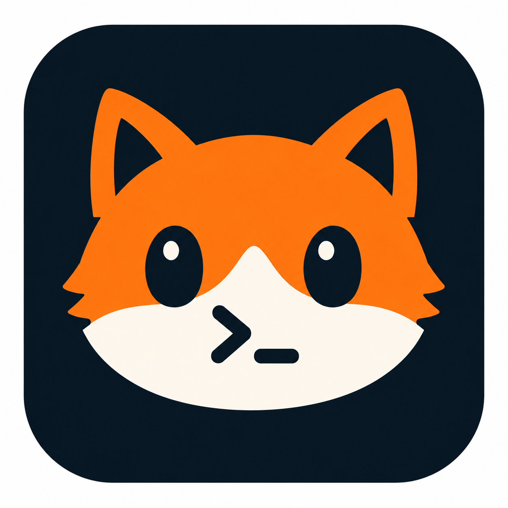
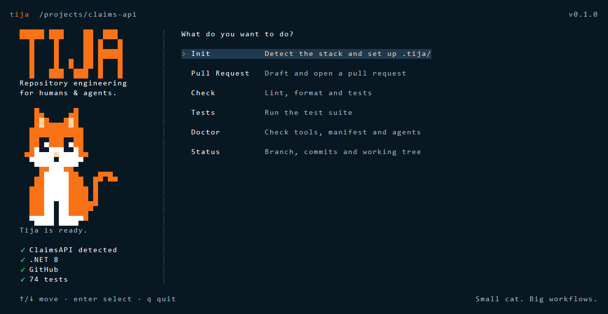

Abrir un PR hoy es copiar y pegar entre tres ventanas

Los workflows, las reglas y el contexto pertenecen al repositorio; el agente es sólo un ejecutor intercambiable.
Una CLI local con TUI, escrita en Go, que vive dentro de cada repo y estandariza el trabajo de ingeniería para humanos y agentes de IA.
Deterministic first
Rama, diff, commits, stack y pruebas se calculan. El LLM sólo redacta.
Repository native
Reglas y templates versionados en .tija/, viajan con el código.
Agent agnostic
Usa los CLIs que ya tienes (claude, codex, gemini). Sin API keys.
No pisa nada
Todo cambio fuera de .tija/ se muestra y se confirma.
Un motor, tres interfaces
abrir diagrama ↗Escribe tija y aparece el gato

 idleTija is ready.
idleTija is ready.Tres fases en main, binario para Windows, Linux y macOS
| Fase 1 | tija init | Detecta el stack (.NET, React/Vite), crea .tija/ y registra el template de PR. Idempotente. | #1 |
| Fase 1 | tija doctor · status | Revisa git, gh, agentes y manifest. Clasifica la rama y sugiere un nombre conforme sin bloquear. | #1 |
| Fase 2 | tija check · lint · format · test | Corre las herramientas del repo y guarda resultados por commit en quality.json. | #3 |
| Fase 3 | tija pr prepare · create | Redacta, valida contra las reglas de gobernanza, hace push y abre el PR con gh. | #4 |
| Marca | TUI + mascota | Startup screen, progreso en vivo y seis estados del gato. | #5 |
Tija calcula; el agente sólo redacta
abrir diagrama ↗Se corrió en Claims y salió el PR #17
## Resumen
Reemplaza AutoMapper por Mapperly (mappers generados en compilación) y elimina la vulnerabilidad High de AutoMapper 14.0.0.
## Objetivo
Resolver el issue #15 y publicar la versión 1.1.1, sin cambios en el contrato de la API.
## Cambios realizados
14 mappers Mapperly, 15 servicios sin IMapper, nuevo proyecto de pruebas con 39 tests.
## Pruebas
dotnet test: 39 superadas, 0 fallidas. dotnet format: quedan diferencias que ya existían; no se agregó ninguna.
## Referencias
Closes #15 — calculado por Tija desde el nombre de la rama.
## Evidencias
N/A, porque no hubo capturas. Tija nunca la rellena por su cuenta.
De la herramienta de PR a la capa de ingeniería del equipo
Foundation · Quality · PR
init, doctor, status, check, pr create.
Review
tija review: findings con archivo, línea y severidad.
MCP
tija mcp serve: el mismo engine como tools.
Test intelligence
Tests afectados, sugeridos y E2E con Playwright.
Multi-repo
Handoffs, workspace, contexto semántico (Qdrant), extensiones.
Los agentes usan las mismas reglas que tú
Claude Code o Codex se conectan a tija mcp serve por stdio y llaman al mismo engine que la CLI y la TUI. No hay un segundo camino: un PR preparado por MCP pasa exactamente las mismas validaciones.
Criterio de salida: Claude Code y Codex preparan un PR válido vía MCP.
Pruébalo hoy en tu rama
O binarios en GitHub Releases. Requisitos: git y, para PRs, gh autenticado.
Small cat. Big workflows.
¿Preguntas?